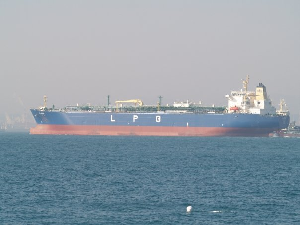
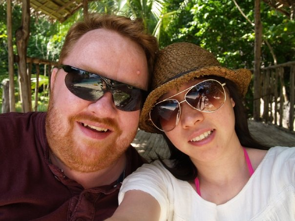

After school I joined the Merchant Navy as a Junior Engineer Officer
I spent 16 years travelling around the world.
I left as a Chief Engineer in 2006 with knee issues
I then went to work and live in Ulsan, South Korea.
I was a site manager for a company called Wiers LGE
I helped the Korean design team at Hundai Heavy Industries in the building of LPG ships.

My first build heading out to sea after a successful sea & gas trial
I specialized in the fire saftey and cargo handling systems on the 56 vessels I assisted in building.
I met my wife while living in Korea and in 2012 we got married

We now live in Edinburgh and after many years as a Aviation security manager I now am a full time student at Napier University